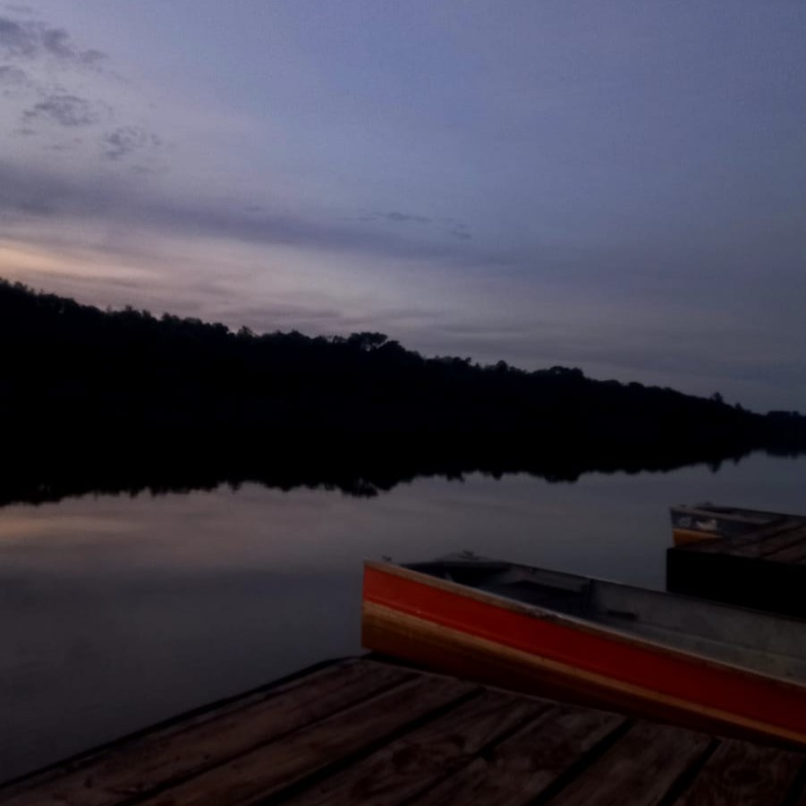
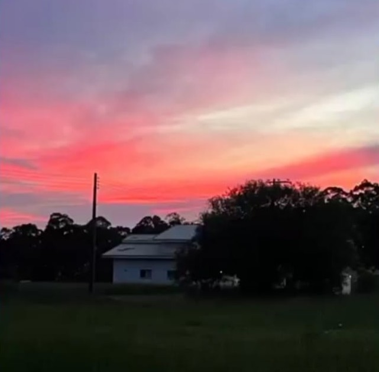
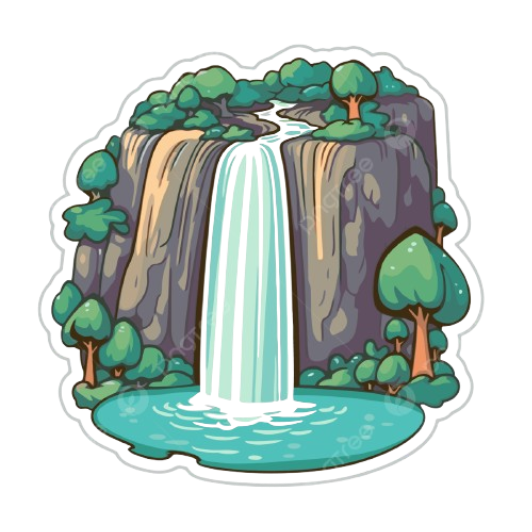
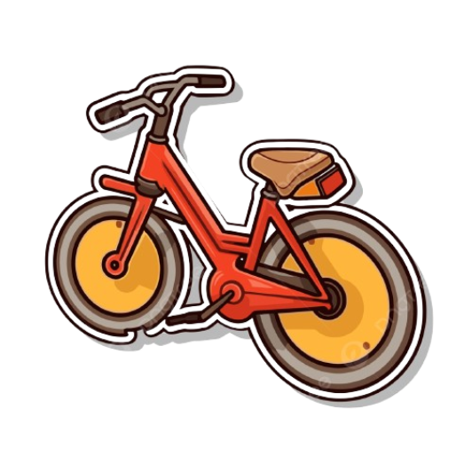
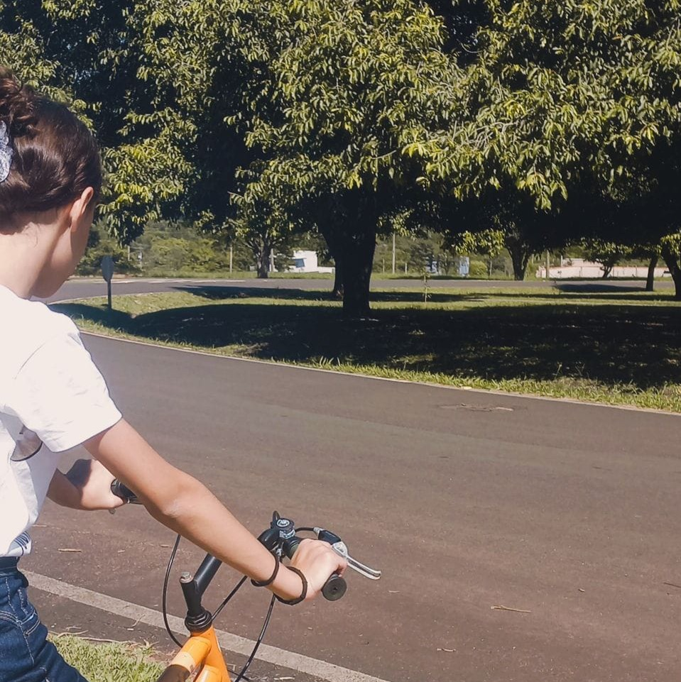
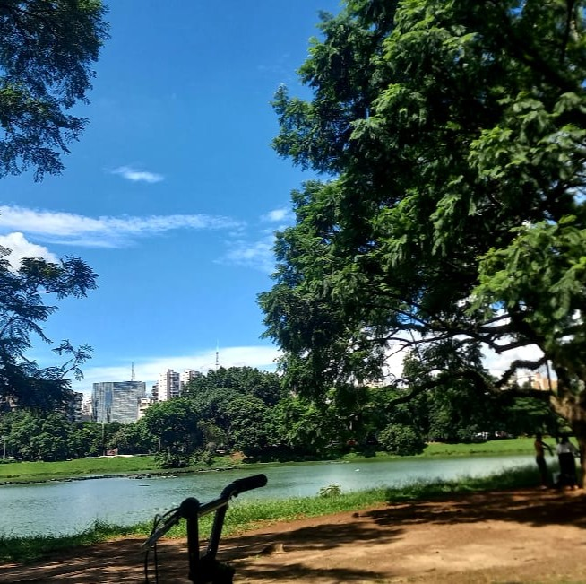
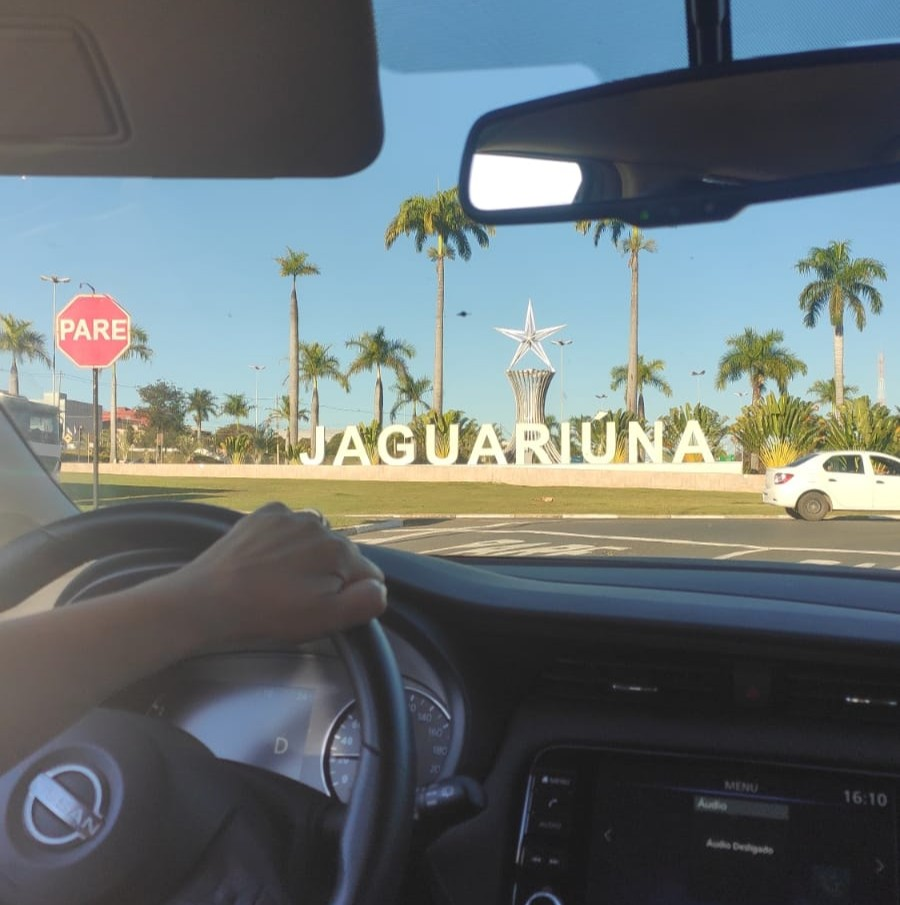

Águas de Santa Bárbara, localizada no Estado de São Paulo,
é sinônimo de tranquilidade, contato intenso com a natureza.
Uma cidade pequena, mas de uma paisagem exuberante!
Esse
lugar contém uma das minhas memórias
favoritas,
foi em uma
de suas ruas em que aprendi a andar de bicicleta.


O Parque Ibirapuera é o parque urbano mais famoso
de São Paulo. O nome vem do tupi e significa "pau podre",
pois
a região era um terreno alagado antes de ser drenada.
Gosto das memórias de quando fui com a minha família,
sempre jogamos vôlei,
andamos de bicicleta e tiramos fotos
lindas e especiais!

Algo que com certeza ficará guardado em minhas lembranças
são as viagens que faço com a minha família. De carro mesmo,
são os bate-voltas em cidades próximas ou até mesmo aqueles
passeios de 12 horas na estrada que tudo uma aventura
ainda maior e inesquecível!